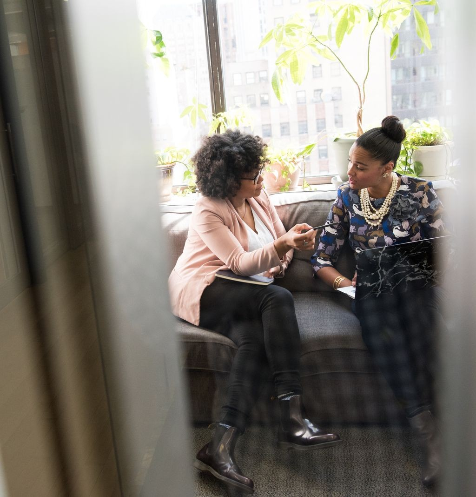
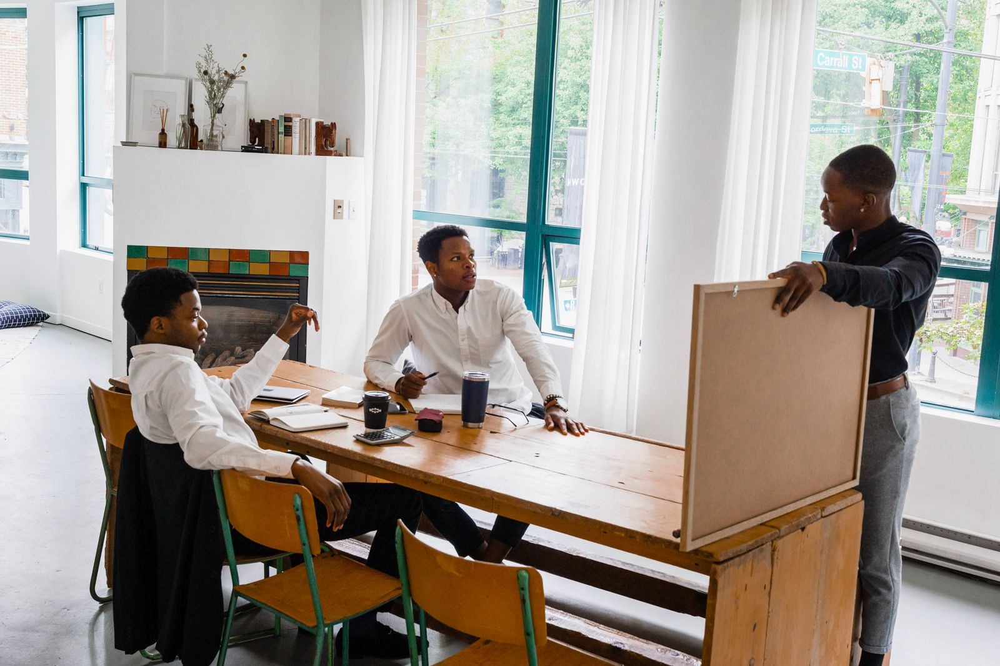
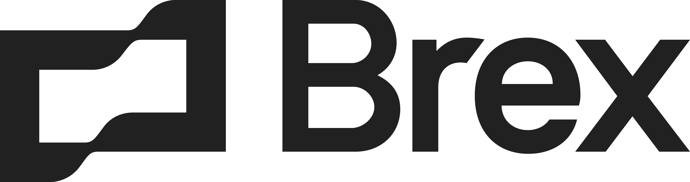
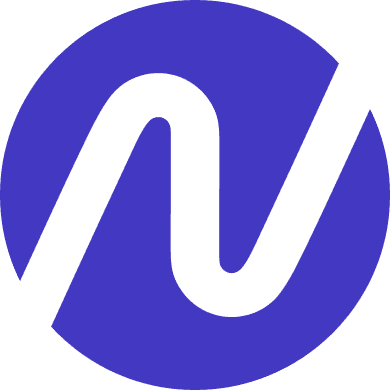
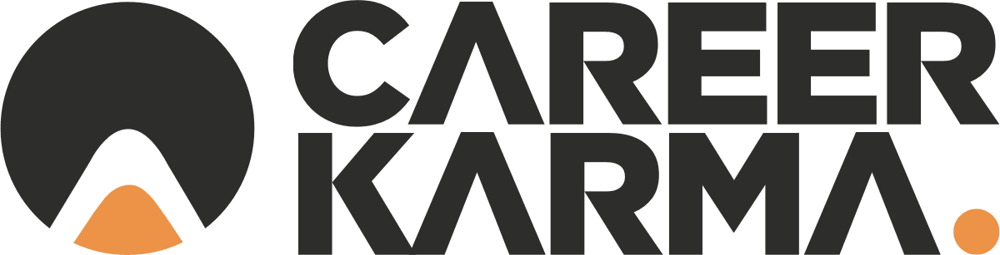
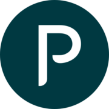
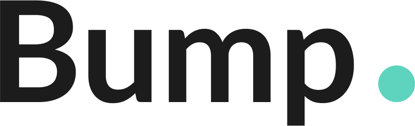

Detroit · Capital readiness for overlooked founders
Get capital.Gain traction.
VentureHue is an entrepreneur support organization built for overlooked and underrepresented technology founders. We get you investment-ready, to your next milestone, and visible to the people writing checks.
Raised by founders in this network
$2,192,470
Equity-free. No fee to raise. That figure is the whole argument for the program, and on venturehue.com today the same counter reads $0 — beside a second one reading zero founders coached.
Why VentureHue
We don't point founders toward capital. We build the readiness to reach it.
Mission-driven capital only reaches a founder who can get in front of it — pitch-ready, network-connected, and visible to the people writing checks. That is the gap ACCESS Lab closes.

Training
Our accelerator program is your gateway to capital readiness — comprehensive training and coaching to secure the funding you need to thrive. From perfecting your pitch to navigating funding opportunities and expanding your network.
Capital
A growing network of capital sources — traditional banks, alternative lenders, grant makers, angel investors, and venture capital — matched to what your business actually needs. Whether or not ACCESS Lab is the right fit, we point you to the right source.
Traction
We don't just help you secure capital, we help you put it to work. Our preferred-vendor network covers marketing, operations and financial management, so funding turns into growth instead of sitting in an account.

Readiness is a room, not a document.
ACCESS Lab runs as a cohort because the hardest parts of raising — the question you have not been asked yet, the number you cannot defend — surface faster beside other founders than they ever do alone.
Programs & Services
VentureHue ACCESS Lab.
An equity-free capital readiness accelerator for early-stage technology founders. No equity taken, no fee to raise — just the training, network and visibility it takes to get funded.
Apply
Decide if ACCESS Lab fits. If you want to learn how to raise from angel investors and venture capitalists, or expand your network to gain visibility and revenue, this program is for you.
Review
We thoroughly review your application and interview you to understand the challenges you're facing and whether our program is the right solution. Only the most outstanding applicants are accepted.
Approve
After review and interview, we make a final decision and notify you. From there, you're invited to join the program and the readiness work begins.
Raise
Training, the capital network and the visibility work run together until you are in front of the right source with a number you can defend.
Portfolio
A track record built one founder at a time.
A selection of the rounds VentureHue's angel syndicate has invested in alongside other investors, and the direct wins its team has helped founders secure through ACCESS Lab.
Six of the nine, as they present themselves





Rows 01–07 are angel-syndicate co-investments; VentureHue and its network participated alongside other investors and did not lead these rounds. Rows 08–09 are direct wins, where VentureHue's team led the grant, credit and go-to-market work itself.
Brittni Abiolu
Founder & Managing Director
“For nearly two decades I've helped entrepreneurs acquire capital, attract clients, operate efficiently, and get connected to the resources they need to build thriving businesses.”
— Brittni Abiolu, on LinkedIn
Who's behind the lab
Sixteen years of capital access, built into one program.
Brittni Abiolu has spent her career on both sides of the table — inside the institutions that write the checks, and beside the founders trying to reach them. ACCESS Lab is what that experience looks like as a program.
Program Manager, Michigan Founders Fund Pre-Accelerator, with gener8tor
Invests via TechTown Detroit's Catalyst Angel Program and Commune Angels
Campbell Ewald, CDK Global, and Accenture — nearly two decades across agency, enterprise software, and consulting
Capital access for underrepresented and overlooked pre-seed founders, centered on Detroit's entrepreneurial ecosystem
What founders say
Funding that actually closed.
“Working with Brittni has been rewarding — she helped us secure a $79,000 line of credit, then assisted us in getting a $250,000 line of credit. Thank you for everything.”
Eric WilliamsonFounder
“The funding process took three months total. I received a total of $92K in business credit, which I'm using to hire and grow. Your program completely met my expectations.”
Sharon PorterFounder
“I have never met an experienced professional like Brittni — a 21st-century visionary who understands the financial services industry completely. Her energy is unmatched in the industry.”
Akindele AkinyemiPresident & CEO, Global African Business Association
In the news
Detroit is paying attention.
VentureHue ACCESS Lab paves the way for diverse entrepreneurs to secure capital success
Comerica Bank teamed up with VentureHue to bring the ACCESS Lab program to more of Detroit's underrepresented founders.
TechTown's “angel” program aims to lift up Detroit's economic ecosystem
“You need strong, successful businesses, and those businesses need access to capital,” Abiolu says of why programs like this matter to a community.
Apply to the next cohort
Ready to get capital-ready?
If you're building a technology company and need to raise from angel investors and venture capital — or simply need the network to gain more visibility and revenue — ACCESS Lab is built for you.